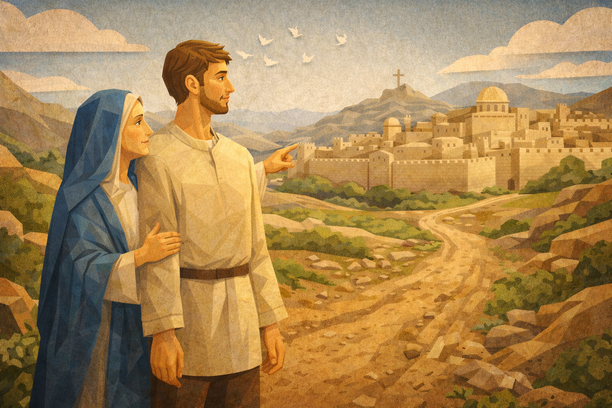

Welcome! Let Us Pray.
An interactive guide to help you learn and pray the Holy Rosary. Today we meditate on the Loading… mysteries.

New to the Rosary?
“You don’t need to be perfect. You just need to begin.”
The Rosary is a simple, peaceful prayer that helps you slow down and reflect on the life of Jesus — one step at a time.
- You don’t need to memorize anything
- You don’t need rosary beads
- You can stop anytime
- You can start right now!
Interactive Rosary Guide
Mystery
The Sign of the Cross
Tip: Use ←/→ keys to navigate.